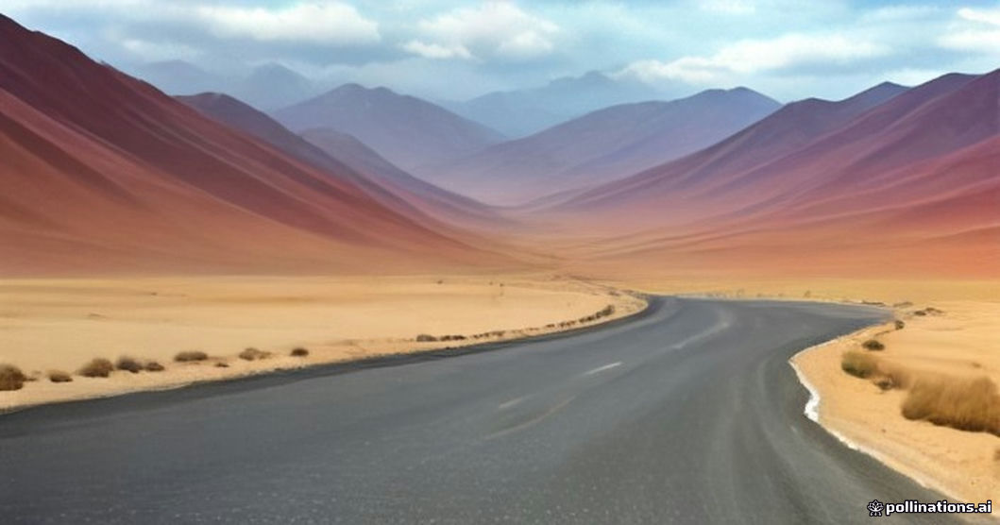

Desert storms and high-altitude downpours in Morocco can turn dry riverbeds—known locally as oueds—into impassable torrents within minutes. While the Sahara is rightly famous for arid heat, seasonal rains in late summer and winter regularly affect the main transit routes connecting Marrakesh, Fes, and the dune field at Erg Chebbi.
For travelers, encountering a river blockade or an inundated gorge road can feel alarming. For experienced drivers, it is a managed operational reality. Understanding how professional drivers evaluate flood risks, execute highway reroutes, and adjust schedules helps put weather-related delays into perspective.
Understanding Route Flashpoints: Oueds and Mountain Passes
The primary transfer corridors between Marrakesh and Merzouga cross complex terrain, including high-altitude passes in the High Atlas range and low-lying valleys along the southern slopes. Baked by months of sun, hard desert soil and exposed rock cannot quickly absorb sudden rainfall. When a storm breaks overhead or miles upstream in the mountains, runoff drains rapidly into narrow dry river channels.
Key flashpoints include the Tizi n'Tichka pass, where rockfalls and mudslides can temporarily block high-elevation turns, as well as unbridged road crossings through the Dades, Todra, and Ziz river systems. Even small regional streams can swell across asphalt roads, carrying debris that makes crossing unsafe for standard highway traffic.
How Local Drivers Track Conditions in Real Time
Professional drivers do not rely solely on public weather apps, which often lack granular detail for remote mountain valleys. Instead, regional transport operators rely on an informal but fast human network.
Gendarmerie Royale checkpoints stationed along the N9, N10, and N13 highways share active road condition updates. Simultaneously, drivers maintain active mobile networks with fellow transport professionals, local guides, and hotel managers ahead on the road. If a riverbed swells 50 kilometers ahead, a driver typically knows before reaching the obstacle.
- Direct updates from regional Gendarmerie checkpoints regarding water levels and road closures
- Peer-to-peer messaging between active desert drivers navigating the same corridor
- Visual assessment of water depth, velocity, and floating debris before attempting any low-lying crossing
Standard Rerouting Protocols and Alternatives
When a mountain pass or river valley becomes impassable, professional operators switch to pre-planned alternative routes rather than waiting indefinitely or risking hazardous crossings. The choice of reroute depends entirely on where the blockage occurs and how long runoff is expected to peak.
If heavy flooding hits the Ziz Valley along the route from Fes, drivers may pause in Midelt until peak water recedes or execute a detour via secondary paved roads toward Gourrama. If mountain mudslides close the direct pass to Marrakesh, drivers re-point vehicles toward the N10 highway, bypassing mountain gaps by running south toward Taliouine and Taroudant.
Trade-Offs: Schedule Adjustments and Comfort
Navigating around major weather blockades requires compromise. Rerouting adds driving distance and operational hours, which directly impacts the day's leisure time. In high-water scenarios, long paved bypasses take precedence over scenic dirt shortcuts.
Selecting a safer, paved detour may mean arriving at the desert edge after dusk, skipping a planned gorge walk, or switching from an off-road track to a longer perimeter highway. In rare cases where dirt tracks to deep desert camps wash out completely, drivers will re-house guests in edge-of-dune hotels in Merzouga for safety.
- Additional 2 to 4 hours of road transit when taking secondary paved detours
- Possible omission of mid-day sightseeing stops to secure safe daytime arrivals
- Temporary relocation to dune-edge hotels if off-road camp tracks become unsafe
What You Should Do as a Traveler
The best approach during severe weather is to trust your driver's local assessment. Drivers monitor ground conditions daily and know the limits of their vehicles. Attempting to push a driver to cross a flooded *oued* to maintain a schedule is dangerous.
Pack flexibility into your travel expectations, carry essential personal items and medications in your daypack, and ensure you have valid desert tour travel insurance that covers unexpected weather disruptions and travel delays.
| Transit Zone | Primary Weather Risk | Typical Operator Reroute Strategy | Impact on Schedule |
|---|---|---|---|
| Tizi n'Tichka Pass | Mudslides, rockfalls, heavy mud flow | Reroute via N10 / Taliouine or wait for highway clearing crews | 2 to 5 hours delay |
| Ziz Gorge (Fes Route) | Flash flooding across unbridged road segments | Short delay in Midelt or detour via eastern secondary roads | 1 to 3 hours delay |
| Dades & Todra Valleys | River swell across valley access roads | Bypass deep gorge turns; maintain main N10 highway corridor | 30 to 90 minutes delay |
| Erg Chebbi Access Pistes | Washed-out off-road tracks through desert oueds | Utilize paved N13 perimeter route to alternative dune access points | 30 to 60 minutes delay |

Illustration, not a photograph — for the real thing, you'll have to stand on the ridge yourself.
Quick answers
A few follow-up questions travelers ask about this.
What happens if flash floods prevent us from reaching our Erg Chebbi desert camp?
If off-road tracks to a camp become impassable due to washed-out riverbeds, your driver will utilize paved perimeter roads to reach safer camp entry points. If deep desert access is completely blocked, guests are re-housed at a hotel situated directly on the dune edge in Merzouga.
Does travel insurance cover delays caused by mountain mudslides or washed-out roads in Morocco?
Most comprehensive travel insurance policies cover trip interruptions, itinerary changes, or extra night accommodations caused by severe weather and official road closures. Verify that your policy covers land transportation delays.
Are Sahara desert tours canceled when heavy rain is forecasted?
Tours are rarely canceled entirely, as desert rainfall is typically localized and short-lived. Instead, itineraries are adjusted dynamically, using alternative highways and adjusted departure times to bypass high-risk flood zones safely.
Planning your own route?
Tell us your dates and what matters to you — we'll answer with a straight recommendation, not a brochure.
Send an inquiry See the itineraries